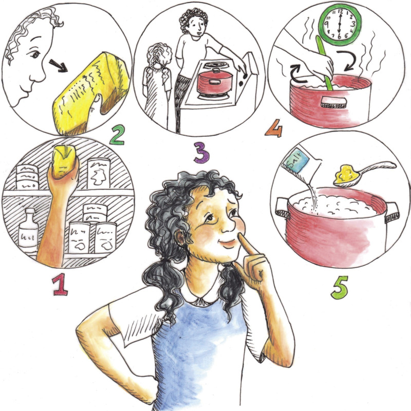
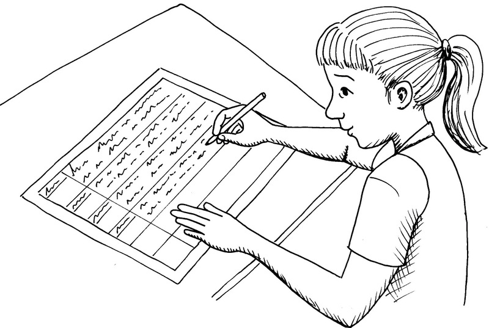
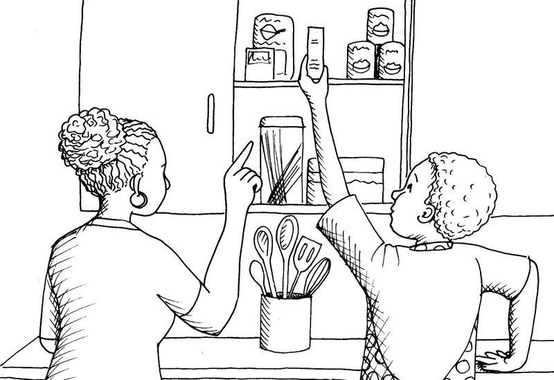
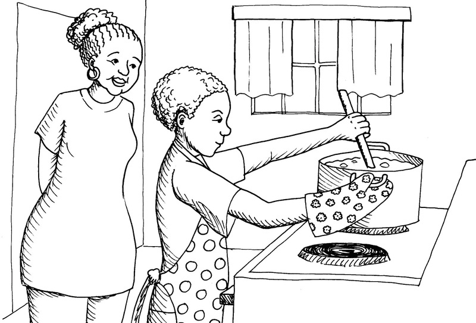

Making and evaluating emergency meals
In the previous chapter, you investigated the types and amount of food refugees need to stay healthy while they are in an emergency situation. You learnt about nutrition and about the food groups that should be in every meal. You also wrote a design brief to feed a refugee camp of 100 people. In this chapter, you will investigate how to make your own meal, prepare the meal and then evaluate it:

Figure 1

Figure 2: Ingredients for an easy-to-cook, healthy meal.
Method for preparing part of a meal
Choose one item of food from your emergency meal. Remember that it should be:
- nutritious,
- easy to find,
- easy to cook, and
- tasty.
Before you prepare the food, write down the steps you have to follow to make it. Write the steps in the correct order, from start to finish. Think carefully about what you need to do first, and then what you need to do after that. To list your steps in this way can be called writing your steps in sequence. Write the steps one underneath the other in a table.
But first, write down how or why you will do each step. How you will do a step is called an instruction. Why you will do a step is called a reason. Write the instruction and reason for each step next to the particular step. Look at the drawing below to see what Linda has done.

Figure 3: Draw a table that shows what you need to do to prepare the food from start to finish. Write the instruction and reason for each step in the column next to each step.
You have to plan carefully, and then set out your plan using the following guidelines:
- Say whether the food you will cook is for breakfast, lunch or dinner. Explain why you decided to cook it for that meal. Here is an example of how to write your answer in the table:
Example
|
Breakfast |
It is the most important meal of the day and will give the refugees a lot of the energy they need. |
- Which item of food did you choose? Explain why. Does it mainly consist of carbohydrates or protein? Look back at the food groups you learnt about in Chapter 7.
Example
|
Samp |
It is high in carbohydrates for lots of energy. |
- Estimate how much of each ingredient you will need to make your item of food for one adult. To do this, look back at your design brief in Chapter 7.
Example
|
Samp |
300 grams |
- Write down how you are going to prepare your item of food. Write down each step in the process.
Example
|
Measure |
Measure out 300 grams of samp. Measure out 1 litre of water. |
- How are you going to cook the food? For this activity, you have to write down the process that you will follow at home, not what you would do at a refugee camp.
Example
|
Choose a pot |
Select a pot that will be suitable for cooking the food. |
|
Mix the ingredients |
Place samp, water and salt in the pot. |
- How long do you think the preparation and cooking will take? Divide it into steps. Add up all the steps and put in the total time at the end.
Example
|
Measure ingredients |
5 minutes |
|
Mix ingredients |
2 minutes |
|
Cook ingredients |
30 minutes |
|
Total time |
37 minutes |
- Ask an adult at home to help you. Write down in your plan who this person will be.

Figure 4: Get an adult to help you with the ingredients and the cooking.
When you have completed your plan, take it to school. Discuss your plan with another learner. This is an important part of the planning before you cook the meal. If either of you missed an important step, you will have to rewrite your plan. Remember, the steps in your plan are your guide to cooking the food.
Prepare the food
In this lesson, you will follow your plan and prepare an item of food at home. It will only be enough for one person, not for 100 people! You will then bring your food to school and the class will evaluate it.
You need to do this part of the activity at home.
- Find all the ingredients before you start.
- Read the plan you wrote to help you. Follow the steps closely.
-
If
you change one of the steps, write down how you changed it.
Also write down why you changed it. You will use this
information when you evaluate your making sequence.
Very important!
You must get permission from an adult when you use equipment at home to cook, or if you are taking ingredients from the cupboard.
Also ask an adult to help you cook.

Figure 5: Ask an adult to help you with the ingredients and the cooking.
Write down any changes you made to the method or the ingredients here:
After cooking the meal, taste it to check that it tastes good. This is called evaluating the flavour of the meal. If you have cooked the meal for the right length of time, it should be easy to chew and swallow. This is called evaluating the texture of the meal. You will present the meal for evaluation, so it should taste good and be healthy. A healthy meal will have the correct nutritional value. You learnt about nutrition in Chapter 7.
Safety warning
If you use an open fire to cook on, remember that open fires can be dangerous. Always make sure safety measures are in place.
1. Make sure the fire is completely out when you have finished your cooking.
2.Put something around the fire to ensure it does not spread.
3.Keep small children away from the fire.
Describe your evaluation of the food here:
Store the meal in a plastic container with a seal that will keep the air out. If you don't have a special container, use an empty, clean margarine container.
Keep the container in the fridge overnight. Bring your item of food to school the next day for evaluation.
Evaluate the food
Bring your prepared meal to school for evaluation. Divide into groups of four. Use plastic spoons and taste each other's meals.
Hygiene warning
Bring your own spoon to school. If you share a spoon, wash it with soap and water before you use it.
After trying out all the food that the other learners have brought to school, write an evaluation of their food and of your own food.
Evaluate each food item. Use the checklist below. Tick "yes" or "no" for each question.
|
Yes |
No |
|
|
Flavour: Is the food tasty? |
||
|
Texture: Does the food taste as if it is properly cooked? |
||
|
Nutritional value: Is the food healthy? |
||
|
Comments: |
When you have all tasted each other’s meals and listed your comments, give each other feedback. Do not be rude about other learners’ food. Make positive suggestions. Say how you think they can improve the taste, texture or nutritional value of their food.
Now write an evaluation of your own meal based on the feedback you received.
Write your evaluation in paragraph form.
For example:
I found this to be a very interesting task. At first, it was difficult to work out how to make sure there was enough protein and carbohydrates, so I used the food groups to guide me. I chose samp as it is a very nutritious grain which is cheap and easy to find. I checked on cooking times for the samp to make sure it was properly cooked and that the texture was right. I added salt and butter to make it tasty.
Now write a second paragraph about everything that you learnt in this chapter. At the end, write down how you would do it differently next time.
For example:
In this chapter, I learnt about planning. I also learnt how to prepare and cook an item of food. If I had to do this lesson again, I would add spinach to my samp, because spinach has vitamins that are not found in samp. Spinach would have made my food more nutritious.
Next week
In the next lesson, you will investigate materials that can be used in rescue operations. Choose two emergency services that support the community, for example the fire department and the National Sea Rescue Institute.